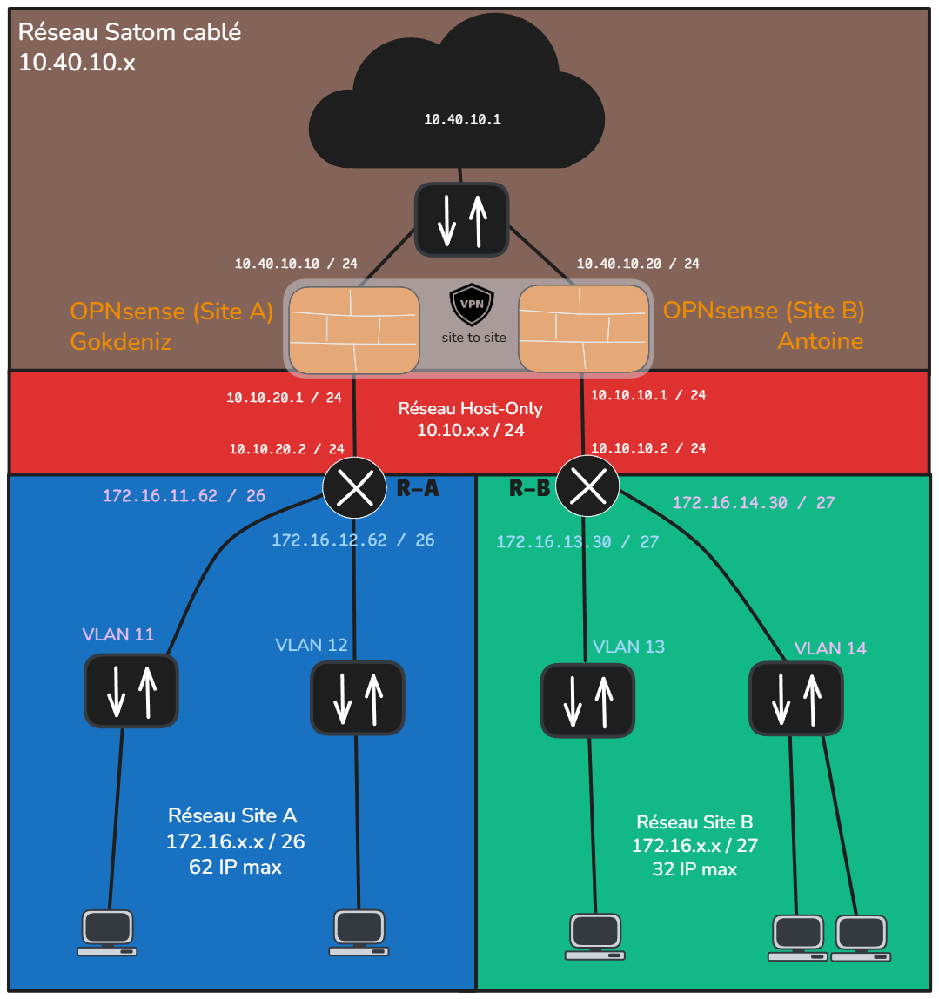

Hackathon – Réseau Satcom Câblé

Contexte
Dans le cadre d’un hackathon, j’ai conçu et déployé un réseau sécurisé reliant deux sites distants via un tunnel Site-to-Site VPN sur OPNsense.
Architecture
- 2 sites : Site A (Gokdeniz) & Site B (Antoine)
- OPNsense sur chaque site : pare-feu, VPN, DHCP, VLANs
- Réseau Host-Only : 10.10.x.x/24
- VLANs locaux : 11, 12 (Site A) | 13, 14 (Site B)
- Connexion Satcom simulée : 10.40.10.x
Fonctionnalités implémentées
- VPN Site-to-Site (IPsec)
- DHCP par VLAN
- Firewall strict (règles entrantes/sortantes)
- Accès sécurisé entre sites
- Simulation avec GNS3
Objectif atteint
Communication sécurisée entre les deux sites, isolation des VLANs, accès contrôlé aux ressources internes.